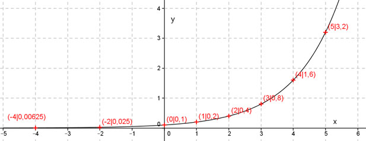

Aufgabe 22 Ermitteln Sie anhand der Wertetabelle die Funktionsgleichung der dargestellten Funktion. x -4 -2 0 1 2 3 4 5 y 0,00625 0,025 0,1 0,2 0,4 0,8 1,6 3,2  Vermutung: Funktion der Form y = q * ax Punktkoordinaten (0|0,1) eingesetzt : x = 0 , y = 0,1 0,1 = q * a0 0,1 = q * 1 q = 0,1 Punktkoordinaten (1|0,2) und q = 0,1 eingesetzt : x = 1 , y = 0,2 0,2 = 0,1 * a1 | :0,1 a = 2 Funktionsgleichung : y = 0,1 * 2x Punktprobe für den Punkt (-4|0,00625) als Beispiel : x = -4 , y = 0,00625 0,00625 = 0,1 * 2-4 0,1 0,1 0,00625 = ----- = ------ = 0,00625 2-4 16 der Punkt liegt auf dem Graphen. So müsste man das für alle Punkte, die bis jetzt noch nicht überprüft wurden, durchführen.